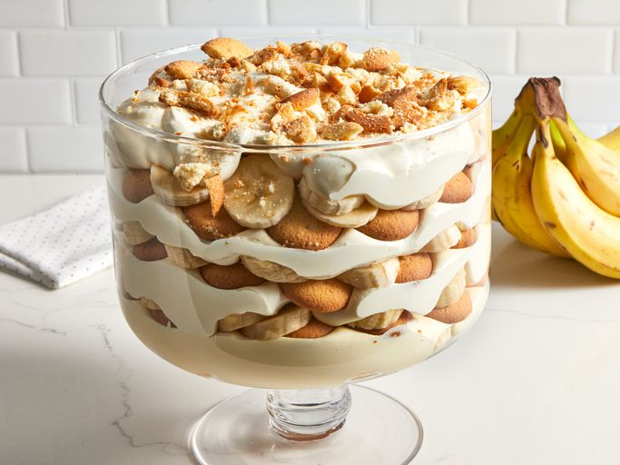

Hello to my website
Lets start baking

Ingredients
- 2 cups cold milk
- 1 (5-ounce) package instant vanilla pudding mix
- 1 (14-ounce) can sweetened condensed milk
- 1 tablespoon vanilla extract
- 1 (12-ounce) container frozen whipped topping, thawed
- 1 (16-ounce) package vanilla wafers
- 12 small bananas, sliced or more as needed
Directions :
- Step 1
Gather all ingredients.
- Step 2
Place milk and pudding mix in a large bowl; beat with a whisk for 2 minutes. Whisk in condensed milk until smooth.
- Step 3
Stir in vanilla, then fold in whipped topping.
- Step 4
Arrange a layer of wafers in the bottom of a glass serving bowl. Top with a layer of banana slices, then a layer of pudding mixture; repeat layers until all ingredients are used.
- Step 5
For best results, chill pudding in the refrigerator for at least 1 hour before serving. Top with extra crushed wafers just before serving.
- Step 6
Enjoy!